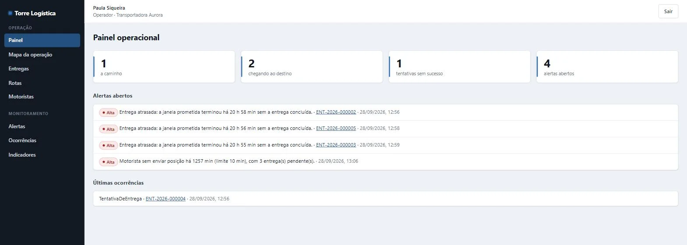
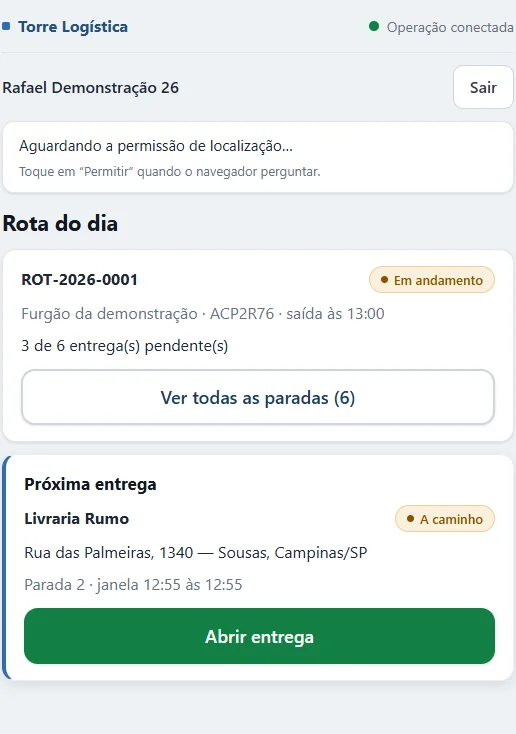
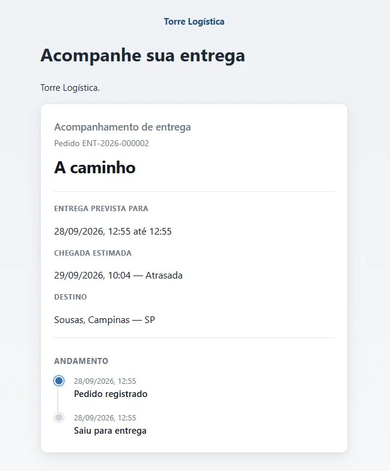

Torre Logística
Operação logística em tempo real
O problema
A transportadora perde a entrega de vista quando o veículo sai para a rua: posição, atraso e prova de entrega ficam em telefonemas e planilhas. A Torre cobre o trecho entre a saída para rota e a conclusão.
v1.0.1 · no ar · set 2026
- Desafios técnicos
- Tempo real
- Geolocalização
- Offline-first
- Retry sem duplicar
- Stack
- .NET 10
- ASP.NET Core
- PostgreSQL 17 + PostGIS
- EF Core
- SignalR
- React 19
- TypeScript
- Docker
- GitHub Actions
- Em números
- 1.392 testes: 695 unidade · 544 integração com PostGIS real · 131 frontend · 22 arquitetura16 categorias de pentest gray-box em produção, sem vulnerabilidade alta3 aplicações web sobre o mesmo núcleo: console, PWA e rastreamento
- Limites
- A demo roda em uma VM Always Free de 1 GB, nó único e sem SLA; ETA é determinístico, não preditivo.
Destaques técnicos
- Geofence e ETA no PostGIS — chegada detectada na ingestão da posição, com histerese contra oscilação de GPS.
- Tempo real com SignalR — o console recebe o aviso só depois do commit; alertas são regras tipadas com evidência.
- PWA offline-first — cada ação nasce no aparelho e é aplicada exatamente uma vez ao reconectar.
- Prova de entrega segura — foto por URL assinada de curta duração; rastreio público com token forte e posição aproximada.
- Multi-tenancy e RBAC — filtro por organização que falha fechado; Transactional Outbox nos webhooks.
- Contrato testado contra a API real — o CI barra descompasso entre frontend e backend.


